전기기능장 (2012-07-22 기출문제)
1과목: 임의구분
1. 변압기 여자전류의 파형은?
- 파형이 나타나지 않는다.
- 사인파
- 왜형파
- 구형파
(정답률: 85%)

2. 행거밴드라 함은?
- 전주에 COS 또는 LA를 고정시키기 위한 밴드
- 전주 자체에 변압기를 고정시키기 위한 밴드
- 완금을 전주에 설치하는데 필요한 밴드
- 완금에 암타이를 고정시키기 위한 밴드
(정답률: 84%)
3. 데이터 처리 명령에서 시프트 명령으로 알맞은 것은?
- INC
- CLRC
- COMP
- RORC
(정답률: 43%)
4. 그림과 같은 회로는?
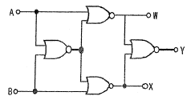
- 비교 회로
- 반일치 회로
- 가산 회로
- 감산 회로
(정답률: 86%)
5. 다음은 인버터에 관한 설명이다. 옳지 않은 것은?
- 전압원 인버터에는 직류리액터가 필요하다.
- 전압원 인버터의 전압 파형은 구형파이다.
- 전류원 인버터는 부하의 변동에 따라 전압이 변동된다.
- 전류원 인버터는 비교적 큰 부하에 사용된다.
(정답률: 63%)
6. 전지의 기전력이나 열전대의 기전력을 정밀하게 측정하기 위하여 사용하는 것은?
- 켈빈 더블 브리지
- 캡벨 브리지
- 직류 전위차계
- 메거
(정답률: 78%)
7. 동기조상기에 대한 설명으로 옳은 것은?
- 유도부하와 병렬로 접속한다.
- 부하전류의 가감으로 위상을 변화시켜 준다.
- 동기전동기에 부하를 걸고 운전하는 것이다.
- 부족여자로 운전하여 진상전류를 흐르게 한다.
(정답률: 68%)
8. 변압기의 효율이 최고일 조건은?
- 철손=1/2동손
- 동손=1/2철손
- 철손=동손
- 철손=(동손)2
(정답률: 91%)
9. 그림과 같은 회로의 합성 임피던스는 몇[Ω]인가?
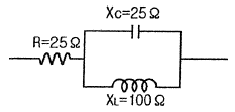
- 25+j20
- 25-j20
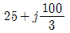
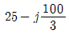
(정답률: 54%)
10. 아래 그림 3상 교류 위상제어 회로에서 사이리스터 T1, T4는 a상에, T3, T6은 b상에, T5, T2는 C상에 연결되어 있다. 이때 그림의 3상 교류 위상제어 회로에 대한 설명으로 옳지 않은 것은?
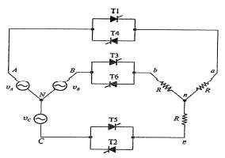
- 사이리스터 T1, T6, T2만 Turn On 되어 있는 경우 각상 부하저항에 걸리는 전압은 전원전압의 각 상전압과 동일하다.
- 사이리스터 T1, T6만 Turn On 되어 있고 나머지 사이 리스터들이 모두 Turn Off 되어 있는 경우에는 a상 부하 저항에 걸리는 전압은 ab 선간전압의 반이 걸리게 된다.
- 6개의 사이리스터가 모두 Turn Off 되어 있는 경우에 는 부하 저항에 나타나는 모든 출력전압은 0 이다.
- 사이리스터 T2, T3만 Turn On 되어 있고 나머지 사이 리스터들이 모두 Turn Off 되어 있는 경우에는 a상 부하저항에 걸리는 전압은 전원의 A상 전압이 그대로 걸리게 된다.
(정답률: 60%)
11. 가공전선이 건조물·도로·횡단보도교·철도·가공약전류전선·안테나, 다른 가공전선, 기타의 공작물과 접근·교차하여 시설하는 경우에 일반 공사보다 강화하는 것을 보안공사라 한다. 고압 보안공사에서 전선을 경동선으로 사용하는 경우 몇 [㎜]이상의 것을 사용하여야 하는가?
- 3[㎜]
- 4[㎜]
- 5[㎜]
- 6[㎜]
(정답률: 67%)
12. 220[V] 가정용 전기설비의 절연 저항의 최소값은 몇[MΩ] 이상 인가?(2021년 변경된 KEC 규정 적용됨)
- 0.2
- 0.3
- 0.4
- 0.5
(정답률: 76%)
13. 그림과 같은 초퍼회로에서 V=600[V], VC=350[V], R=0.1[Ω]스위칭 주기 T=1800[㎲],L은 매우 크기 때문에 출력전류는 맥동이 없고 I0=100[A]로 일정하다. 이 때 요구되는 ton시간은 몇 [㎲]인가?
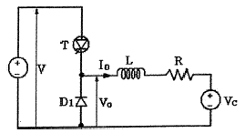
- 950[μs]
- 1⑤0[μs]
- 1080[μs]
- 1110[μs]
(정답률: 62%)
14. 그림과 같이 대전 된 에보나이트 막대를 박검전기의 금속판에 닿지 않도록 가깝게 가져갔을 때 금박이 열렸다면 다음 중 옳은 것은? (단, A는 원판, B는 박, C는 에보 나이트 막대이다.)
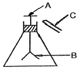
- A : 양전기 B : 양전기 C : 음전기
- A : 음전기 B : 음전기 C : 음전기
- A : 양전기 B : 음전기 C : 음전기
- A : 양전기 B : 양전기 C : 양전기
(정답률: 90%)
15. 3상 유도전동기의 회전력은 단자전압과 어떤 관계인가?
- 단자전압에 무관하다.
- 단자전압에 비례한다.
- 단자전압의 2승에 비례한다.
- 단자전압의 1/2승에 비례한다.
(정답률: 75%)
16. 분류기를 사용하여 전류를 측정하는 경우 전류계의 내부 저항 0.12[Ω], 분류기의 저항이 0.04[Ω]이면 그 배율은?
- 2배
- 3배
- 4배
- 5배
(정답률: 72%)
17. 동기발전기의 전기자 권선법으로 사용되지 않는 것은?
- 2층권
- 중권
- 분포권
- 전절권
(정답률: 84%)
18. 반파 위상제어에 의한 트리거 회로에서 발진용 저항이 필요한 경우의 트리거 소자가 아닌 것은?
- SUS
- PUT
- UJT
- TRIAC
(정답률: 80%)
19. 변압기에서 임피던스의 전압을 걸 때 입력은?
- 정격 용량
- 철손
- 전부하시의 전손실
- 임피던스 와트
(정답률: 77%)
20. 단상 유도전동기의 기동방법 중 기동 토크가 가장 큰것은?
- 분상 기동형
- 콘덴서 기동형
- 반발 기동형
- 세이딩 코일형
(정답률: 79%)
2과목: 임의구분
21. 2진수의 음수 표시법으로 -9의 8비트 부호화된 절대값의 표시값은?
- 10001001
- 11110110
- 11110111
- 10011001
(정답률: 61%)
22. 저압가공 인입선의 시설 기준으로 옳지 않은 것은?
- 전선이 옥외용 비닐절연전선일 경우에는 사람이 접촉 할 우려가 없도록 시설할 것
- 전선의 인장강도는 2.30[kN] 이상일 것
- 전선은 나전선, 절연전선, 케이블일 것
- 철도 또는 궤도를 횡단하는 경우에는 레일면상 6.5[m] 이상일 것
(정답률: 79%)
23. 금속전선관의 굵기 [㎜]를 부르는 것으로 옳은 것은?
- 후강 전선관은 바깥지름에 가까운 홀수로 정한다.
- 후강 전선관은 안지름에 가까운 짝수로 정한다.
- 박강 전선관은 바깥지름에 가까운 짝수로 정한다.
- 박강 전선관은 안지름에 가까운 홀수로 정한다.
(정답률: 81%)
24. 피뢰기의 보호 제1대상은 전력용 변압기이며, 피뢰기에 흐르는 정격방전전류는 변전소의 차폐유무와 그 지방의 연간 뇌우 발생일수 등을 고려하여야 한다. 다음 표의 ( )에 적당한 설치장소별 피뢰기의 공칭 방전전류[A]는?
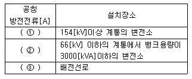
- ① 15000, ② 10000, ③ 5000
- ① 10000, ② 5000, ③ 2500
- ① 10000, ② 2500, ③ 2500
- ① 5000, ② 5000, ③ 2500
(정답률: 78%)
25. 어떤 시스템 프로그램에 있어서 특정한 부호와 신호에 대해서만 응답하는 일종의 해독기로서 다른 신호에 대해서는 응답하지 않는 것을 무엇이라 하는가?
- 산술연산기(ALU)
- 디코더(decoder)
- 인코더(encoder)
- 멀티플렉서(multiplexer)
(정답률: 75%)
26. 어떤 회로에
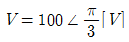
의 전압을 가하니 I=10√3+j30[A]전류가 흘렀다. 이 회로의 무효전력[Var]은?(오류 신고가 접수된 문제입니다. 반드시 정답과 해설을 확인하시기 바랍니다.)- 0
- 1000
- 1732
- 2000
(정답률: 44%)
27. T형 플립플롭을 3단으로 직렬접속하고 초단에 1[k㎐]의 구형파를 가하면 출력 주파수는 몇 [㎐]인가?
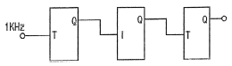
- 1
- 125
- 250
- 500
(정답률: 63%)
28. 일반 변전소 또는 이에 준하는 곳의 주요 변압기에 시설하여야 하는 계측장치로 옳은 것은?
- 전류, 전력 및 주파수
- 전압, 주파수 및 역률
- 전력, 주파수 또는 역률
- 전압, 전류 또는 전력
(정답률: 91%)
29. 트랜지스터에 있어서 아래 그림과 같이 달링톤(Darlington) 구조를 사용하는 경우 맞는 설명은?
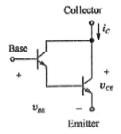
- 같은 크기의 컬렉터 전류에 대해 트랜지스터가 2개 사용되므로 구동회로 손실이 증가한다.
- 달링톤 구조를 사용하면 트랜지스터의 전체적인 전류 이득은 감소한다.
- 같은 크기의 컬렉터 전류에 대해 트랜지스터 컬렉터-이미터 전압(VCE)을 2배로 하는데 사용한다.
- 같은 크기의 컬렉터 전류에 대해 트랜지스터 구동에 필요한 구동회로 전류를 감소시키는 효과를 얻을 수 있다.
(정답률: 60%)
30. 과도한 전류변화 (
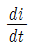
)나 전압변화 (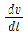
)에 의한 전력용 반도체 스위치의 소손을 막기 위해 사용하는 회로는?- 스너버 회로
- 게이트 회로
- 필터회로
- 스위치 제어회로
(정답률: 83%)
31. 가요전선관 공사에 의한 저압 옥내배선을 다음과 같이 시행 하였다. 옳은 것은?
- 2종 금속제 가요전선관을 사용하였다.
- 옥외용 비닐절연전선을 사용하였다.
- 단면적 25[mm2]의 단선을 사용하였다.
- 가요전선관에 제1종 접지공사를 하였다.
(정답률: 70%)
32. 유도전동기의 속도제어방법에서 특별한 보조 장치가 필요 없고 효율이 좋으며, 속도제어가 간단한 장점이 있으나, 결점으로는 속도의 변화가 단계적인 제어방식은?
- 극수 변환법
- 주파수 변환제어법
- 전원전압 제어법
- 2차 저항 제어법
(정답률: 66%)
33. 입·출력 인터페이스 (I/O interface)에 대한 설명 중 옳지 않은 것은?
- 대부분 CPU내에 존재한다.
- 데이터(data)형식상의 차이를 맞춘다.
- CPU와 입·출력장치간의 동작속도를 맞춘다.
- CPU와 입·출력 장치사이에 존재하여 데이터의 전송을 원활하게 한다.
(정답률: 46%)
34. 22.9[kV-Y] 수전설비의 부하전류가 20[A]이며, 30/5[A]의 변류기를 통하여 과전류 계전기를 시설하였다. 120%의 과부하에서 차단기를 트립 시키려고 하면 과전류계전기의 Tap은 몇 [A]에 설정하여야 하는가?
- 2[A]
- 3[A]
- 4[A]
- 5[A]
(정답률: 60%)
35. 지상역률 60[%]인 1000[kVA]의 부하를 100[%]의 역률로 개선하는데 필요한 전력용 콘덴서의 용량은?
- 200[kVA]
- 400[kVA]
- 600[kVA]
- 800[kVA]
(정답률: 58%)
36. 반지름 25[cm]인 원주형 도선에 π[A]의 전류가 흐를때 도선의 중심축에서 50[cm]되는 점의 자계의 세기는? (단, 도선의 길이 ℓ은 매우 길다.)(오류 신고가 접수된 문제입니다. 반드시 정답과 해설을 확인하시기 바랍니다.)
- 1[AT/m]
- π[AT/m]
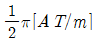
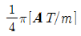
(정답률: 50%)
37. 소맥분, 전분, 기타의 가연성 분진이 존재하는 곳의 저압 옥내배선으로 적합하지 않는 공사방법은?
- 가요전선관 공사
- 금속관 공사
- 합성수지관 공사
- 케이블 공사
(정답률: 86%)
38. 어느 8비트 컴퓨터의 기억 용량이 1Mbyte이다. 이때 필요한 번지선(address line)의 수는?
- 16
- 20
- 24
- 8
(정답률: 46%)
39. 그림과 같은 환류 다이오드 회로의 부하전류 평균값은 몇 [A]인가? (단, 교류전압 V=220[V], 60[㎐], 부하저항 R=10[Ω]이며, 인덕턴스 L은 매우 크다.)
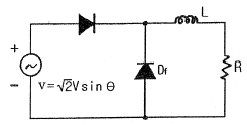
- 6.7[A]
- 8.5[A]
- 9.9[A]
- 11.7[A]
(정답률: 52%)
40. 1차 전압 200[V], 2차 전압 220[V], 50[kVA]인 단상단권변압기의 부하용량[kVA]은?
- 25[kVA]
- 50[kVA]
- 250[kVA]
- 550[kVA]
(정답률: 49%)
3과목: 임의구분
41. 다음 중 지중 송전선로의 구성 방식이 아닌 것은?
- 방사상 환상 방식
- 가지식 방식
- 루프 방식
- 단일 유닛 방식
(정답률: 81%)
42. 2극과 8극의 2대의 3상 유도전동기를 차동 접속법으로 속도제어를 할 때 전원 주파수가 60[㎐]인 경우 무부하 속도 N0는 몇 [rpm]인가?
- 1800[rpm]
- 1200[rpm]
- 900[rpm]
- 720[rpm]
(정답률: 69%)
43. 연산의 종류를 단상(unary)연산과 이항(binary)연산으로 구분할 때 다음 중 이항 연산에 속하지 않는 것은?
- OR
- complement
- AND
- exclusive OR
(정답률: 67%)
44. 직류발전기의 유기기전력을 E, 극당 자속을 ø, 회전속도를 N이라 할 때 이들의 관계로 옳은 것은?
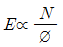
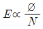
- E∝øN2
- E∝øN
(정답률: 66%)
45. 양수량 35[m3/min]이고 총양정이 20[m]인 양수 펌프용 전동기의 용량은 약 몇 [kW]인가? (단, 펌프 효율은 90%, 설계 여유계수는 1.2로 계산한다.)
- 103.8[kW]
- 124.6[kW]
- 152.4[kW]
- 184.2[kW]
(정답률: 61%)
46. 동기전동기의 여자전류를 증가하면 어떤 현상이 생기는가?
- 앞선 무효전류가 흐르고 유도 기전력은 높아진다.
- 토크가 증가한다.
- 난조가 생긴다.
- 전기자 전류의 위상이 앞선다.
(정답률: 61%)
47. 간선의 배선방식 중 고조파 발생의 저감대책이 아닌 것은?
- 전원의 단락용량 감소
- 교류리액터의 설치
- 콘덴서의 설치
- 교류 필터의 설치
(정답률: 54%)
48. 절대조건 점프 명령 중에서 조건이 서로 상반되는 것 끼리 나타낸 것은? (단, Z-80인 경우)
- JP M, JP C
- JP NC, JP C
- JP NC, JP PE
- JP Z, JP E
(정답률: 46%)
49. 반가산기의 진리표에 대한 출력함수는?
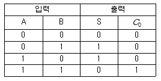
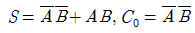
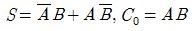
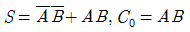
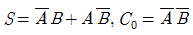
(정답률: 72%)
50. 도통 상태에 있는 SCR을 차단 상태로 만들기 위해서는 어떻게 하여야 하는가?
- 게이트 전압을 (-)로 가한다.
- 게이트 전류를 증가한다.
- 게이트 펄스전압을 가한다.
- 전원 전압이 (-)가 되도록 한다.
(정답률: 63%)
51. 서지 흡수기는 보호하고자하는 기기의 전단 및 개폐서지를 발생하는 차단기 2차에 각상의 전로와 대지간에 설치하는데 다음 중 설치가 불필요한 경우의 조합은 어느 것인가?
- 진공차단기-유입식 변압기
- 진공차단기-건식 변압기
- 진공차단기-몰드식 변압기
- 진공차단기-유도 전동기
(정답률: 61%)
52. 그림과 같은 회로에서 대칭 3상 전압(선간전압) 173[V]를 Z=12+j16[Ω]인 성형결선 부하에 인가하였다. 이 경우의 선전류는 몇 [A]인가?
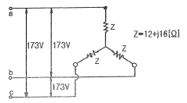
- 5.0[A]
- 8.3[A]
- 10.0[A]
- 15.0[A]
(정답률: 55%)
53. 단상 직권 정류자 전동기의 속도를 고속으로 하는 이유는?
- 전기자에 유도되는 역기전력을 적게 한다.
- 전기자 리액턴스 강하를 크게 한다.
- 토크를 증가시킨다.
- 역률을 개선시킨다.
(정답률: 70%)
54. 직류전동기의 속도제어 중 계자권선에 직렬 또는 병렬로 저항을 접속하여 속도를 제어하는 방법은?
- 저항제어
- 전류제어
- 계자제어
- 전압제어
(정답률: 71%)
55. 다음 중 샘플링 검사보다 전수검사를 실시하는 것이 유리한 경우는?
- 검사항목이 많은 경우
- 파괴검사를 해야 하는 경우
- 품질특성치가 치명적인 결점을 포함하는 경우
- 다수 다량의 것으로 어느 정도 부적합품이 섞여도 괜찮을 경우
(정답률: 84%)
56. 작업시간 측정법 중 직접측정법은?
- PTS법
- 경험견적법
- 표준자료법
- 스톱워치법
(정답률: 77%)
57. 준비작업시간 100분, 개당 정미작업시간 15분, 로트크기 20일 때 1개당 소요작업시간은 얼마인가? (단, 여유시간은 없다고 가정한다.)
- 15분
- 20분
- 35분
- 45분
(정답률: 62%)
58. 소비자가 요구하는 품질로서 설계와 판매정책에 반영되는 품질을 의미하는 것은?
- 시장품질
- 설계품질
- 제조품질
- 규격품질
(정답률: 82%)
59. 로트의 크기가 시료의 크기에 비해 10배 이상 클 때, 시료의 크기와 합격판정개수를 일정하게 하고 로트의 크기를 증가시킬 경우 검사특성곡선의 모양 변화에 대한 설명으로 가장 적절한 것은?
- 무한대로 커진다.
- 별로 영향을 미치지 않는다.
- 샘플링 검사의 판별 능력이 매우 좋아진다.
- 검사특성곡선의 기울기 경사가 급해진다.
(정답률: 70%)
60. 축의 완성지름, 철사의 인장강도, 아스피린 순도와 같은 데이터를 관리하는 가장 대표적인 관리도는?
- c 관리도
- np 관리도
- u 관리도
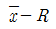
관리도
(정답률: 73%)